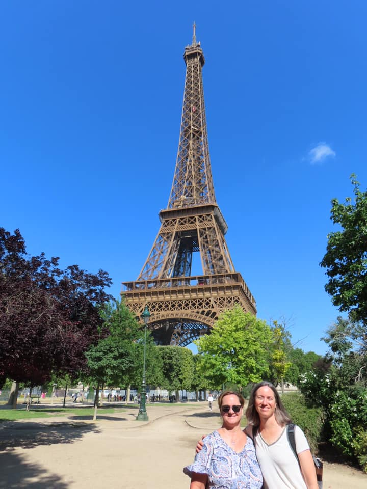
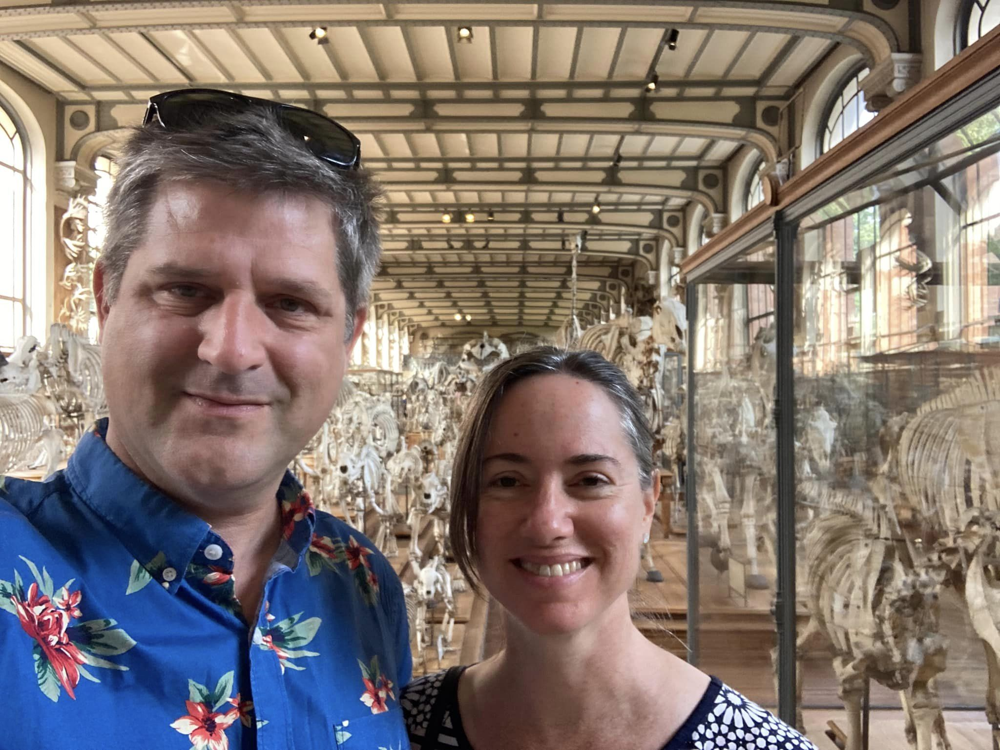

1 / 33
Brad’s father Joe visited us in California for Christmas 2022. It was a wet winter but there
were a few sunny days to enjoy, including a trip to downtown Sacramento.
2 / 33
We also took Joe for wine tasting in Amador county.
3 / 33
Brad attended the PAG conference in San Diego in January. While there, we stayed our
friends Joan and Jacob. While Jacob was out of town we went with Joan and our friend Mike
to tour the USS Midway. It was super cool.
4 / 33

Joan and Rachel keep watch from the end of the giant aircraft carrier!
5 / 33
From Joan and Jacob’s place, it was an easy jaunt to La Jolla and the Birch aquarium at Scripps.
6 / 33
Here we are at the Self-Realization Fellowship Meditation Gardens in Encinitas.
7 / 33
Happy to celebrate Rachel’s mother Mary’s 92 nd birthday in January.
8 / 33
Rachel’s sister Rebecca came over from Reno in April and we went to Gabby Moreno and
Los Lobos at the Mondavi Center with our friends Eve and Dennis.
9 / 33
Rachel had a “big” birthday in March. We celebrated with her sisters by renting a house in
Sonoma county for a week. Here we are at the wild animal park.
10 / 33
While in Sonoma, we took a day trip over to the coast and down to Bodega Bay. We had fun
hiking around and exploring the beaches.
11 / 33
In early June we visited our friends Mike, Heather and their kids in Santa Cruz. Rachel made
friends with their chickens!
12 / 33
Soon after our return from Santa Cruz we went with our friends Janis and Jessica to a lovely
winery near Placerville.
13 / 33
By the end of June we were jetting off to the South of France. Rachel had a conference in Montpellier that some of our friends also attended. Here is Rachel with Emine, who had been a labmate in Vienna.
14 / 33
We also got to hang out with Marcella, a friend since our time in Oregon. It was wonderful to catch up! Here they are in the Aigues-Mortes (medieval walled town) in the Camargue, a region on the coast near Montpellier.
15 / 33
Rachel’s sister Shelly joined us in Europe and while Rachel was attending the conference, Brad and Shelly were seeing the local sites. Here is Brad at the walled city of Carcassonne.
16 / 33
After the conference we left Monpellier for Aix en Provence to visit our friend Minako. She
has fine taste in food and organized some great restaurants for us!
17 / 33
Aix is a beautiful city with great markets.
18 / 33
Thansk to Minako being a wonderful host! One highlight was a road trip to the famous
lavender fields.
19 / 33
The lavender got to Rachel.
20 / 33
While in Europe, we decided to hop over to Vienna to catch up with friends. While Brad met up with his UN colleagues, Rachel and Shelly enjoyed a ladies’ lunch at Demel cafe.
21 / 33
We were lucky to meet up with a bunch of our friends while in Vienna. It was too short and a
bit busy, but really nice.
22 / 33

From Vienna we went to Paris for a few days of site-seeing before returning to California.
23 / 33

Visiting the Paris natural history museum was a first for us.
24 / 33
The museum was filled with all kinds of cool fossils and skeletons.
25 / 33
Rachel had a Jurassic moment in the museum.
26 / 33
Rachel had a big role in the play Much Ado About Nothing in early August in the city of
Winters.
27 / 33
We finally made it up to Lake Tahoe in September. The water was a bit rough most of the
time for paddle boarding, but we were happy in kayak mode.
28 / 33
Rachel checks out the only dwelling we can afford in the Tahoe region.
29 / 33
Here we are back in Winters, enjoying nature.
30 / 33
Having fun at Octoberfest in midtown Sacramento with Jessica, Janis and their friends. We still have
the proper attire from our time in Austria.
31 / 33
We had a busy Halloween season with a party hosted by friends Karen and Ted and one by David and
Alice. Rachel dressed as the villain Poison Ivy and Brad was the “killer weed”. Dude!
32 / 33
The gang at David and Alice’s place.
33 / 33
Brad’s father Joe returned to California to celebrate Thanksgiving with us. Not sure how
much he liked the California Agriculture Museum, but we loved all the tractors.